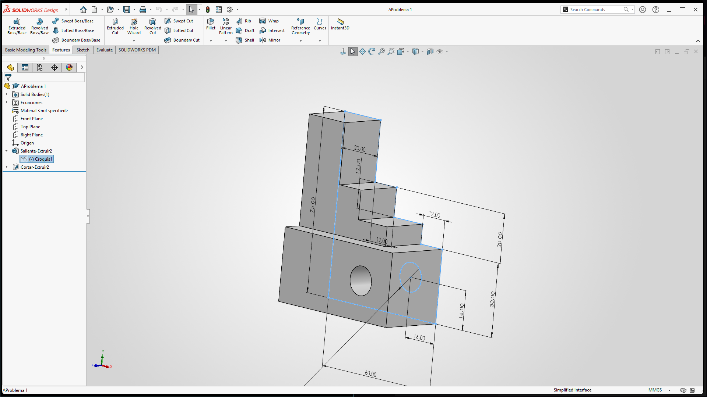
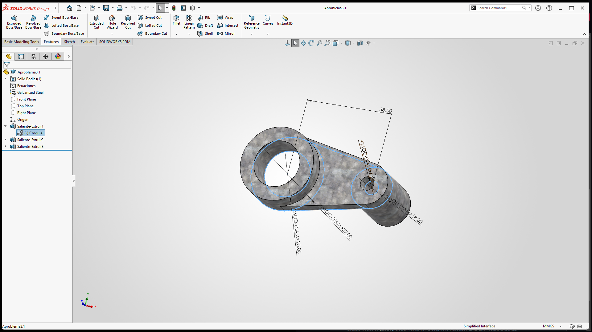

1. Introducción y Contexto
El diseño asistido por computadora (CAD) es una base clave para el desarrollo de proyectos mecatrónicos, ya que permite unir la mecánica, la electrónica y el control. Durante esta primera semana, el propósito principal consiste en conocer las bases para crear modelos virtuales en 3D.
Diseñar de manera digital antes de fabricar físicamente ayuda a reducir errores, aprovechar mejor los materiales y probar ideas de forma virtual. Por eso, aprender a usar herramientas como SolidWorks resulta muy útil para desarrollar soluciones de ingeniería eficaces.
2. Desarrollo de la Práctica y Herramientas
Las actividades se realizan siguiendo un orden práctico. A continuación, se muestran las funciones y herramientas utilizadas para obtener las piezas en 3D:
- 2.1 Interfaz de Usuario y Árbol de Operaciones (FeatureManager): El programa abre un espacio de trabajo con un sistema de medidas definido y planos de referencia (Alzado, Planta y Vista Lateral). El panel principal cuenta con el FeatureManager (Árbol de Operaciones), que guarda en orden los trazos y pasos realizados, permitiendo hacer cambios fácilmente sin empezar el diseño desde cero.
- 2.2 Creación de Croquis (Sketch): Cualquier pieza sólida comienza con un dibujo plano en 2D. Usando figuras como líneas, arcos, círculos y rectángulos, se dibuja la forma principal sobre un plano. El programa ayuda detectando puntos clave y alineaciones para facilitar el trazo.
-
2.3 Relaciones de Geometría:
Para que el dibujo tenga orden y lógica, se aplican reglas que limitan el movimiento de las líneas:
- Horizontal y Vertical: Alinean los elementos de forma recta.
- Paralelo y Perpendicular: Mantienen la orientación correcta entre los bordes.
- Coincidente y Concéntrico: Unen puntos exactos o comparten el mismo centro en círculos.
- 2.4 Acotación con Cota Inteligente: Esta herramienta sirve para agregar medidas exactas (como largos, radios, diámetros y ángulos). De esta forma, un dibujo libre se convierte en un modelo con medidas reales y precisas, evitando confusiones en el tamaño de la pieza.
- 2.5 Salientes y Extrusión: Una vez listo el dibujo plano, la función de extrusión le da profundidad a la figura a lo largo de una dirección para transformarla en un objeto en 3D. Esto imita procesos de fabricación reales, como cortar o moldear un material.
3. Evidencia del Trabajo
Como resultado de las prácticas realizadas, se obtienen y exportan los siguientes modelos tridimensionales:
Dibujo 1: Bloque escalonado con perforaciones pasantes
Este primer diseño consiste en un cuerpo prismático base sobre el cual se levantan perfiles escalonados sucesivos mediante operaciones de extrusión acumulativa. Adicionalmente, el modelo incorpora barrenos o perforaciones cilíndricas pasantes tanto en la sección frontal como en la lateral. Su elaboración permite aplicar de forma práctica las herramientas de croquizado sobre caras planas, el control de la profundidad en las extrusiones de corte y la asignación rigurosa de cotas inteligentes para definir alturas, longitudes totales y separaciones entre centros de perforación.

Dibujo 2: Brazo de enlace mecánico con geometría concéntrica
El segundo diseño representa un componente típico de transmisión o articulación mecánica, caracterizado por una estructura de conexión con extremos circulares de diferentes diámetros enlazados mediante un cuerpo cónico tangencial. Este ejercicio destaca el uso de relaciones geométricas avanzadas como la concentricidad entre círculos y la tangencia en líneas de unión. Asimismo, facilita la comprensión del acotamiento diametral y radial, elementos fundamentales para asegurar el ajuste correcto de ejes o pernos en ensamblajes mecatrónicos reales.

4. Conclusiones
La práctica muestra la importancia de trabajar con orden en el diseño mecánico por computadora. Se comprueba que un buen modelo depende de usar correctamente las medidas y las reglas geométricas para que las piezas finales sean estables y funcionales.
5. Fuentes de Información
Los conceptos sobre diseño asistido por computadora y el funcionamiento del programa se basan en la siguiente documentación y literatura:
- Dassault Systèmes. (2026). SolidWorks Essentials: Basic Part Modeling, Sketching and Feature Management Documentation. Disponible en: www.solidworks.com
- Groover, M. P., & Zimmers, E. W. (2008). CAD/CAM: Computer-Aided Design and Manufacturing. Pearson Educación.
- Sham Tickoo. (2020). SolidWorks for Designers Release. CADCIM Technologies.
- Brostow, W., & Hagg Lobland, H. E. (2016). Materials Science and Engineering for Mechatronics. Springer.